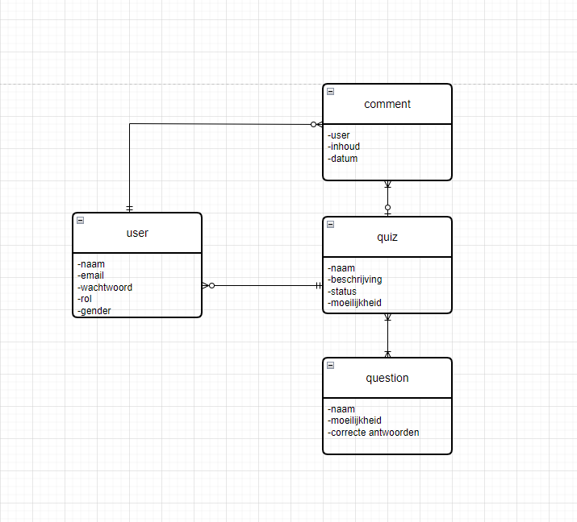
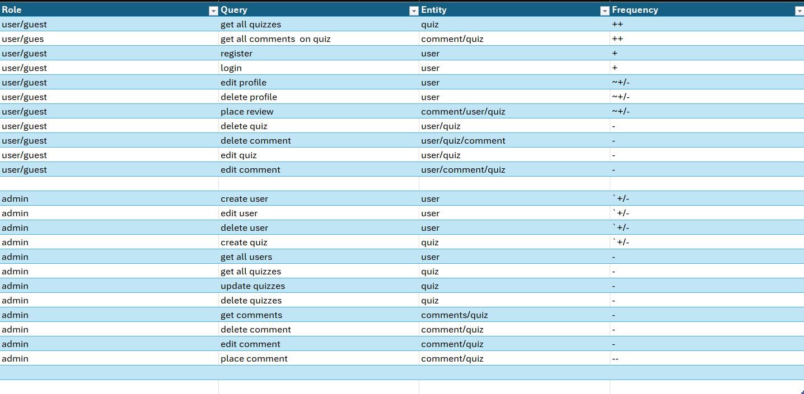

Welkom bij Trivia Meesters, de ultieme quizervaring voor nieuwsgierige en fanatieke spelers! Mijn doel is om leren en plezier samen te brengen door middel van uitdagende en boeiende trivia vragen. Of je nu wilt strijden voor de hoogste score, je kennis wilt vergroten, of gewoon een leuke tijd wilt hebben met vrienden, mijn app biedt het allemaal. Algemene kennis is altijd leuk om te testen. En met behulp van de app kan je jezelf testen maar ook veel nieuwe dingen leren. Strijd ook tegen je vrienden in de leaderboards om te kijken wie de echte trivia meester is.
Aan de rechter zijde vindt u mijn ERD voor de web applicatie
In de ERD vind u het entiteit question. Deze is echter op een manier zwak. Omdat ik deze questions ophaal vanaf een externe API, genaamd Trivia API. Deze heeft geen apparte CRUD functionaliteit. Deze zitten als het ware ingeboud in het Quiz entiteit. Als u een quiz zou aan maken worden de vragen namelijk automatisch gecreërd. Voor delete geldt het dat als een quiz wordt verwijderd deze ook alle vragen binnen de quiz verwijdert. Lezen van de vragen gaat verder via de Quiz runner die u kunt starten via de start knop in de quiz details. Ook heb ik de entiteit question aangemaakt in de backend, ik vond alleen dat het niet in de casus van mijn project viel. Het is op deze manier handiger


In deze tabel kunt u makkelijk herkennen welke querys het meeste worden uitgevoerd op mijn applicatie!
U kunt bijvoorbeeld heel gemakkelijk zien dat bij de user/guest de acties "get all quizzes" en "get all comments" het meest frequent worden gedaan. Dit kunt u zien aan de "++". Voor Admins geldt "create user" als meest frequent gebruike query in de database
| # | Usecase |
|---|---|
| 1 | Als user wil ik een account kunnen maken |
| 2 | Als user wil ik kunnen inloggen |
| 3 | Als user wil ik mijn account kunnen verwijderen of bewerken |
| 3 | Als user wil ik een quiz kunnen aan maken |
| 3 | Als user wil ik een quiz spelen |
| 3 | Als user wil ik op een quiz kunnen commenten |
| 3 | Als user wil ik een quiz kunnen verwijderen of bewerken |
| 3 | Ook mijn comments als user wil ik kunnen verwijeren of bewerken |